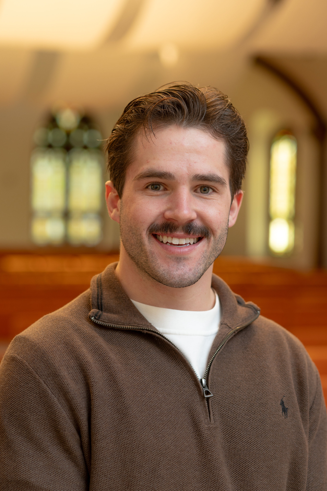

Communications Major 🗣️ | Web Design Minor 🛠️
I'm a Communications student at the University of Jamestown with a passion for digital media, storytelling, and visual design. My experience includes sports communication, social media, website development using HTML and CSS, and data analytics using Python. I am skilled in leveraging Python for data collection, cleaning, and analysis, enabling me to extract actionable insights, identify trends, and support data-driven decision-making in communication and marketing projects.
I am a dedicated Communications major at the University of Jamestown with a minor in Web Design. I thrive at the intersection of storytelling, digital media, and technology. Whether I'm crafting compelling content, managing social media strategies, designing engaging websites, or applying analytical tools to optimize performance, I bring creativity, technical expertise, and attention to detail to every project.
My experience spans sports communication, social media management, front-end web development, and data analytics. I excel at collaborating with teams to produce work that resonates with audiences, drives engagement, and leverages data to inform strategic decisions. Through analyzing trends, interpreting metrics, and applying insights, I aim to create content and strategies that are both impactful and measurable. I am passionate about continuous learning and actively explore emerging trends in communication, design, technology, and data-driven storytelling to stay ahead in a rapidly evolving digital landscape.
Outside the classroom, I have developed strong organizational and time management skills by successfully balancing academics, internships, and extracurricular commitments. These experiences have strengthened my ability to prioritize, manage multiple projects simultaneously, and deliver high-quality results under tight deadlines. I am eager to contribute my expertise in a professional environment where I can grow, make a meaningful impact, and help craft compelling stories that engage and inspire audiences.
Additionally, I am a proactive problem solver who approaches challenges with a positive attitude and a focus on finding innovative solutions. I value open communication and believe that effective teamwork is key to producing successful outcomes. As I continue to refine my technical skills and creative approach, I am motivated to contribute to projects that make a tangible difference and enhance audience engagement across multiple platforms.
I am also deeply committed to personal and professional growth, regularly seeking feedback and opportunities to expand my knowledge. With a strong foundation in both the creative and technical aspects of communication, I am confident in my ability to adapt quickly and deliver high-quality work in fast-paced, dynamic environments. Ultimately, my goal is to leverage my diverse skill set to help organizations connect authentically with their audiences and achieve meaningful results.
Major: Communications
Minor: Web Design
Expected Graduation: 2026
Current GPA:3.89
Email: KoleChristensson14@gmail.com
LinkedIn: View My Profile
Phone number: (701) 269-5054
